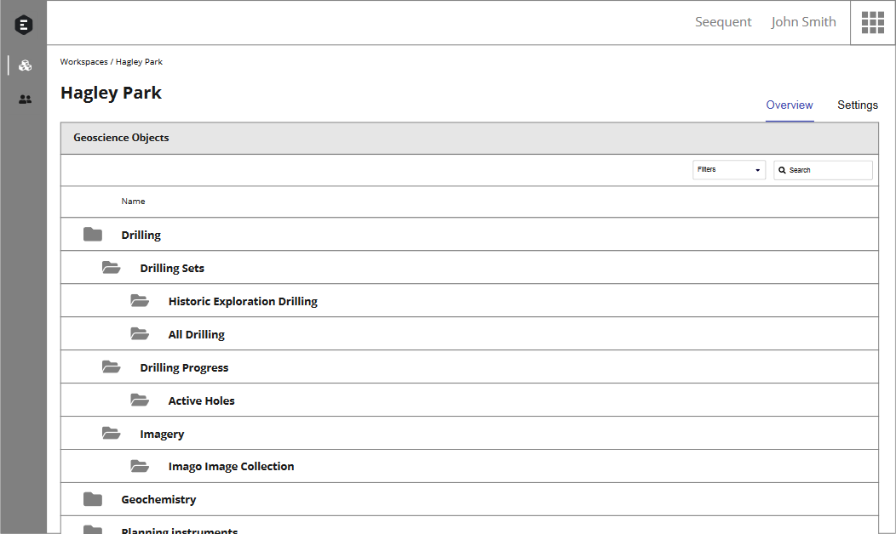
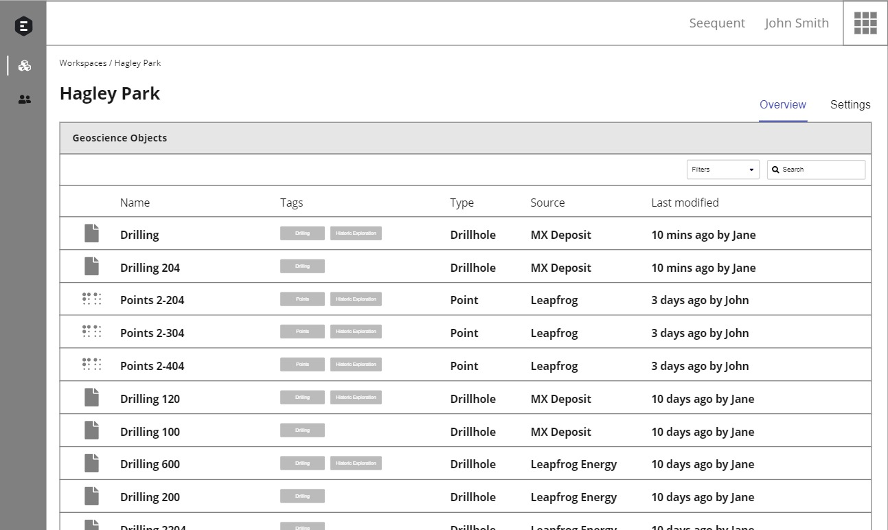
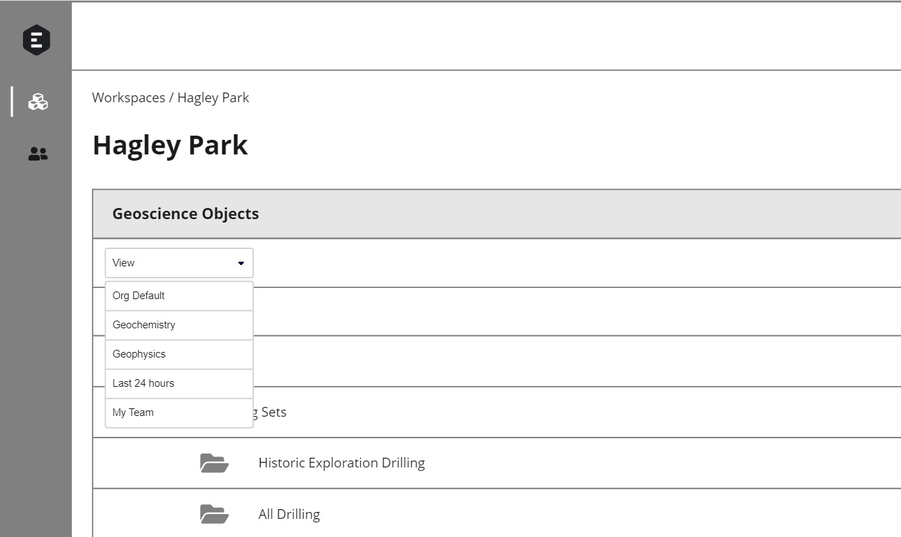
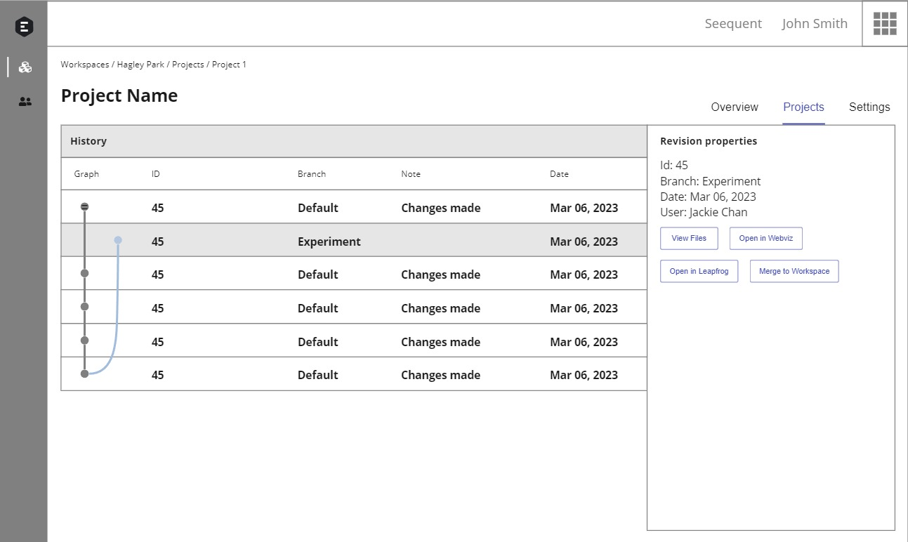
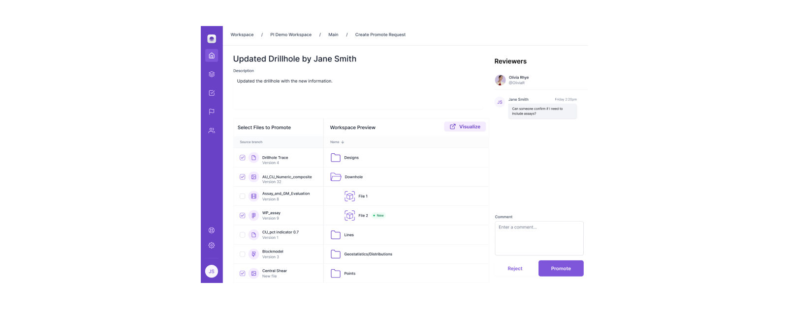

Data Management Discovery
To begin discovery for Workspaces, our approach involved crafting initial sketches that emphasized the use of tags, folders, views, and projects. We investigated how customers manage their daily tasks, identifying their priorities and pinpointing activities perceived as unnecessary. This involved comprehending how proposed solutions would impact their existing workflows. Furthermore, we aimed to uncover the intricacies of participants' thought processes and mental models as they navigate and manage their data.


Folders
Tags

Views
Projects
Goals
- Assess the strengths and weaknesses of folders, tags, views and projects for organizing data
- Understand how the above affect their key workflows
Methodology
- Moderated, remote, semi-structured interviews
- Rolling research
- 5 Geologists/Database administrators
- Microsoft Teams
Results
- No preference: Most didn't have a preference of folders or tags
- Concerns on Scalability: Many had concerns on folders and their potential for becoming overloaded and disorganized
- Projects: All were excited for projects, since the ability to merge between branches and initiate peer reviews was a feature they had repeatedly requested.
Learnings
From user feedback, we learned that users weren't too concerned about specific details, like whether they preferred tags or folders. The 'Projects' feature got a lot of positive reactions, so our next steps include planning detailed user tests for merging and peer reviewing. We're continuing our exploration in discovery sprints, refining our testing plans to focus on how users can easily share data, integrate different data sources, and efficiently publish 'objects' or 'objects and projects.'

Early ideation of 'Create promote request' feature, showing how users could request a peer review before merging.